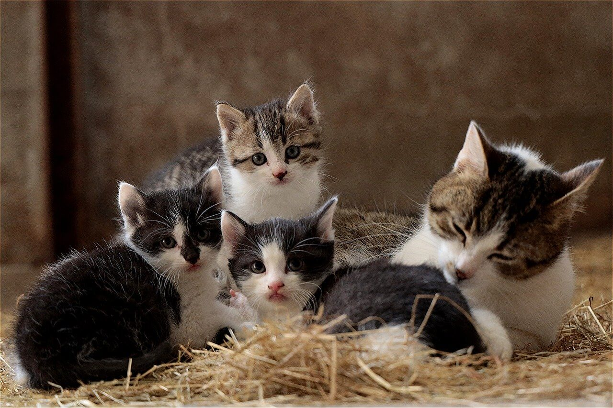

Quienes somos?
Hace casi 10 años que comenzamos cómo agrupación viendo que la mayoría de los esfuerzos de rescate se enfocaban en perros, así vimos la necesidad de articular un lugar desde donde poder ayudar a los felinos así cómo comenzar a generar conciencia sobre la tenencia responsable de estos animales. Desde 2020 y con la experiencia ganada en una década de trabajo, es que nos conformamos cómo fundación.
Fin de la organización

Rescate, recuperación, reubicación de gatitos en situación de abandono. Asistencia y esterilización de colonias de gatos en situación de abandono. Generación de conciencia y educación en tenencia responsable.